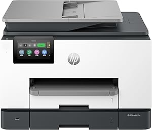
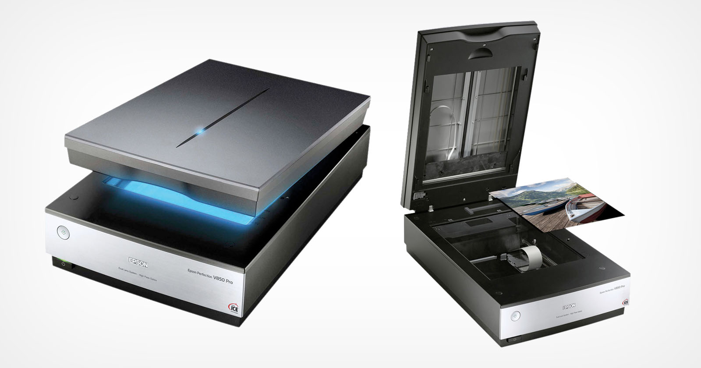
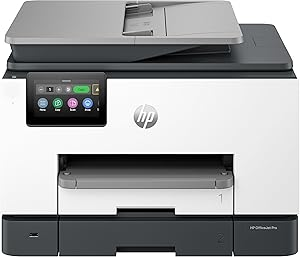
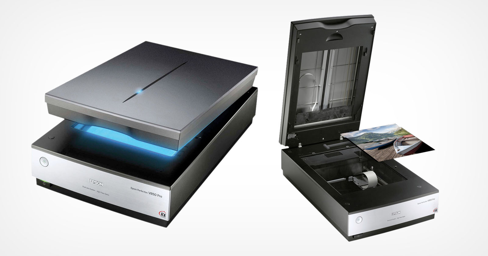

- Purpose
- It adds Wi-Fi capabilities to devices that do not have a built-in Wi-Fi or replaces a faulty internal adapter.
- How does it work?
- The dongle contains a wireless network interface card (NIC) that communicates with your router or access point over Wi-Fi.
- Advantages
-
- Portable to use
- Often supports newer standards than old built-in cards (e.g., Wi-Fi 5 or Wi-Fi 6)
- Can improve signal reception if it has a better antenna
Which devices use Wi-Fi USB dongles?
Wi-Fi USB dongles are most commonly used with:


 





Desktop Computers
- Many desktop PCs do not come with built-in Wi-Fi, especially older models.
- A dongle allows a desktop to connect to Wi-Fi networks without installing an internal card.
Laptops
- Older laptops that only have Ethernet or outdated Wi-Fi standards (like 802.11g) can use a dongle to access modern, faster Wi-Fi.
- Also useful if the built-in Wi-Fi adapter is broken or underperforming.
Smart TVs and Media Players
- Some older Smart TVs and streaming boxes (like certain Roku, Amazon Fire Stick, or Blu-ray players) support USB Wi-Fi dongles for wireless internet access if they lack built-in Wi-Fi.
Printers and Scanners
- A few older network-capable printers can use a USB Wi-Fi adapter to join a wireless network (if they have a USB host port and support it).
Single-Board Computers
- Devices like the Raspberry Pi (older models) that don’t have Wi-Fi can use a USB dongle for wireless networking.
Network Appliances
- Some industrial or special-purpose devices that only have USB ports can add Wi-Fi connectivity through a dongle if supported by their firmware.
In summary
Any device with a USB port, running an operating system or firmware that supports external USB Wi-Fi adapters, can potentially use a Wi-Fi dongle to access a wireless network.
Types & Functions of networking and wireless connections
Networking and wireless connections Link devices so that they share data and resources
Types
- Wired Connections
- Ethernet: Reliable, fast connections using cables
- Fiber optics: Extremely high- speed, long distance connections
- Wireless Connections
- Wi-Fi: Wireless local area network (WLAN) for homes and offices
- Bluetooth: Short-range connection for peripherals
- Cellular (3G, 4G, 5G): Mobile networks for internet access
- Satellite: Wireless, long-distance internet access (used in remote areas)
Functions
- Allow communication between devices (file sharing, messaging, streaming).
- Enable resource sharing (printers, storage, internet connection).
- Support remote work and collaboration over the internet.
- Facilitate access to cloud services and online resources.
Description of the Common Functionality of Server Networks
A server network is a system where one or more servers provide services to client devices on the network.
Common functions:
- File server: Stores and manages files centrally for clients to access.
- Print server: Manages printers and print jobs for multiple clients.
- Web server: Hosts websites and serves web pages to browsers.
- Database server: Stores and manages structured data for apps or users.
- Email server: Sends, receives, and stores email messages.
- Authentication server: Verifies user identities (e.g., Active Directory).
- Application server: Runs specific business applications for clients.
Benefits of server networks:
- Centralized management and security.
- Easier to back up and maintain data.
- Shared resources lower costs and improve efficiency.